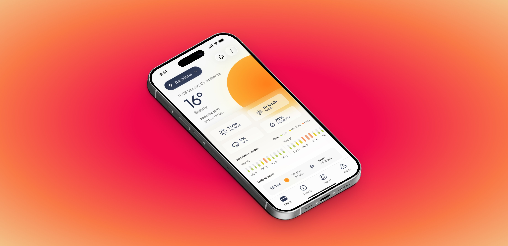
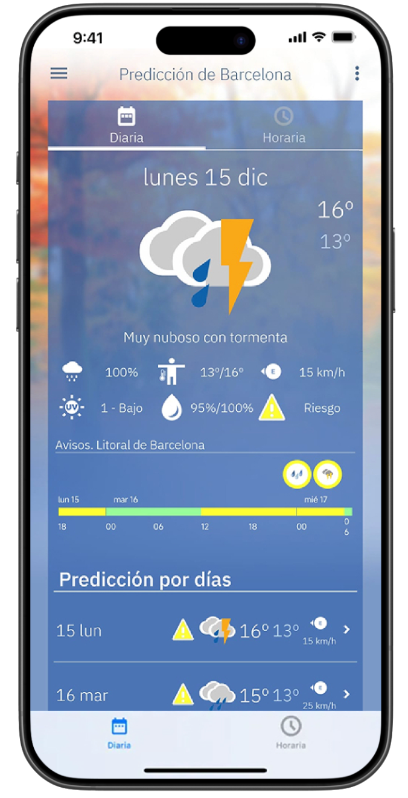
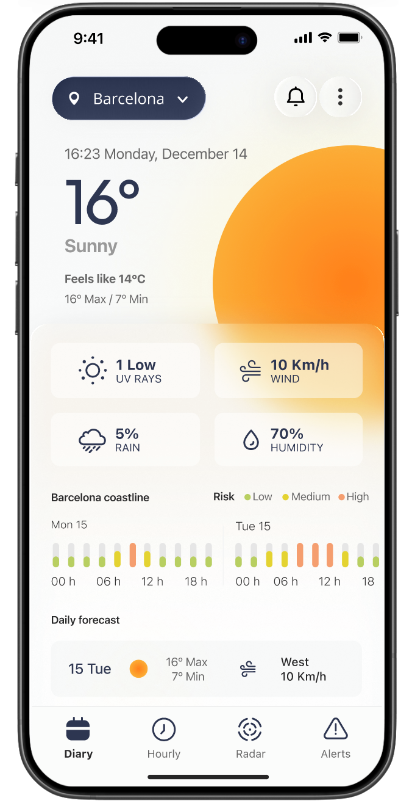

A research-driven redesign of Spain's official weather app. Starting from multi-year App Store feedback, translating user frustration into specific, defensible UI decisions.

AEMET is Spain's official meteorological agency. Their app is one of the most downloaded weather apps in the country — and despite containing genuinely rich data that private competitors can't match, it consistently receives low satisfaction ratings.
The gap between data quality and experience quality is a design problem, not a data problem. This project explores how a research-first approach can generate specific, defensible UI decisions — rather than redesigning based on aesthetic preferences alone.
Self-initiated portfolio project, not affiliated with AEMET. Scoped to the mobile app (iOS and Android). No changes to the underlying meteorological models are proposed.
Before completing the research synthesis, an initial visual exploration was developed to test hypotheses about information hierarchy, navigation structure and the weather-state graphic system.
Showing this early exploration is intentional: the research will validate, refine or challenge these decisions — not decorate them.
Before — Current AEMET App

After — Design Exploration

These screens are a starting hypothesis, not a validated design. The research synthesis will determine which decisions hold up, which need to be revised, and what problems may be introduced.
The project is structured in four phases. Research and wireframing are complete — visual design and validation follow.
Research
1.079 Play Store reviews analyzed (2020–2025), manual qualitative coding into 9 categories, heuristic evaluation of the current app, and competitive analysis.
CompleteWireframes & Functional spec
Full wireframe set covering all states, flows and edge cases. Functional documentation with variables, transitions and design notes per screen.
CompleteUI Design
Component library and design tokens in Figma (light/dark mode). High-fidelity screens for all main sections. Interactive prototype.
PendingValidation
Guerrilla usability testing (3–5 sessions) with the redesigned prototype against the original app.
Pending1.079 Play Store reviews were analyzed across six years (2020–2025), manually coded into nine problem categories. The corpus is biased toward negative experiences — that's the nature of public reviews — but the frequency and consistency of certain complaints across different years and users makes them reliable signals.
Rating trend · 2020 → 2025
1.079 reviews codificadas manualmente por categoría de problema, año e intensidad emocional. El campo helpful_count se usó como proxy de resonancia colectiva para ponderar los pain points más compartidos.
Pain point categories · % of negative reviews · click to expand
The app exposes two separate data views (days / hours) that pull from different API endpoints without a unifying model. There's no visible "last updated" timestamp, so users can't tell whether they're seeing a stale prediction or a genuinely changed forecast.
No background refresh service (WorkManager / BackgroundTasks) is implemented. The widget is also architecturally dependent on the full app opening to trigger a fetch — there's no independent data layer.
The municipality database is limited to capitals and large towns. There's no fuzzy search or autocomplete, so partial names yield zero results.
There's no local cache layer (Room / SQLite). Every app open is a live network fetch with no persistence.
The Radar tab is a WebView pointing to the desktop version of aemet.es — there's no native tile integration. This is the single most disruptive moment in the user journey.
The information hierarchy gives equal visual weight to secondary data (humidity, pressure) and primary data (temperature, condition). Navigation relies on text-only tabs with no clear active state.
The current UI has no persistent timestamp. Combined with the absence of local caching, the app can silently display outdated data while appearing fully functional.
Alerts are issued at province level, not GPS-localized — a single province-wide orange alert applies equally to coastal, mountain and inland zones, generating false positives for most users.
The app has no push notification system. Alerts surface only as in-app banners, which means users who rely on the app as a safety tool receive no proactive communication at all.
Key finding
Most of the critical pain points are not a data quality problem. They stem from missing client-layer infrastructure: no background refresh for the widget, no local cache, the radar redirecting to a desktop website. 70% of critical issues are fixable without touching the meteorological backend.
A comprehensive wireframe set covering the full app — every screen, every state, every edge case. Each frame is paired with a spec panel documenting state variables, transitions and design rationale.
The wireframes serve a dual purpose: they are a design artefact and a functional specification. The goal was to resolve all interaction logic before moving to visual design, so that Phase 3 can focus on aesthetics rather than structure.
App flow · 3 key diagrams
Módulos documentados